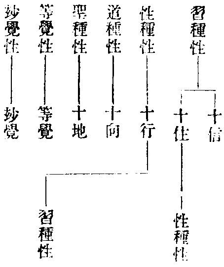

讀教記卷第四
玅玄(四)
十身舍那
華嚴經(廿八卷)此菩薩知眾生身國土身業報身聲聞身獨覺身菩薩身如來身智身法身虗空身此菩薩知眾生心之所樂能於眾生身作自己身亦作國土身乃至虗空身。
籤(五)(六)八地說一切佛現身觀莫捨忍門勸觀常住入無功用心是菩薩現十種身(云云)以此驗知是別教地相故至第八地始觀十種身 玄(四)(九)。
玅記(二)(廿二)云何七地等者古人所判云七地恐起二乘心者此似通位是故難其不成別義難圓亦爾若言七地始入無功用道此是別教教道明義故不成圓 句(二)(十二)。
玅記(九)(廿五)問華嚴十身此但二三身數既少攝義不周是則此經身義不足答義有通別通義可爾別則不然彼通云身故云十身盧舍那也別釋如來故不應云業報國土佛等若欲通收彼經十身應開為四則以化身收於業報智即報身虗空屬法餘皆應攝 句(九)(十八)。
十諫(一)若不現大便為尊特是則別圓之人見猿猴鹿馬無非他受用報以皆中道感應故也。
解謗(九)若中道感應名尊特者名多在佛(云云)若現起九界差別之形未必顯立尊特之號雖不立名非無其義如華嚴明十身舍那其業報身豈不收於猿猴鹿馬耶既稱舍那即淨滿義既淨且滿寧非尊特三身正義(二十)(四)甞撿華嚴新舊二本皆說第八地菩薩現十種身謂眾生身(云云)經中並無十身舍那之稱又於如來身上自具十身謂菩提身(云云)觀師名此十身為法性身是則如來自具者方名十身舍那玅樂所指未詳其意。
光明記(三)(卅三)。
此八地菩薩分證十界之體起十界之用故經曰此菩薩能以眾生身作自己身籤曰是菩薩現十種身記曰彼通云身故云十身盧舍那也然中道感應者理具三千能感理滿三千能應故知感應不出三千三千諸法法法即性豈猿猴鹿馬而不即耶八地菩薩果雖未滿而能分起十身之應別圓行人依業識修中者方感此應也或問國土身既是依報且別教不譚無情佛性如何依報說法耶曰此約菩薩神力變現現身利益隨機設化固非無情說法也。
支佛(辟支迦羅此云緣覺亦名獨覺畢勤支底迦此云各各獨行)
玅玄(四)(廿七)大論稱獨覺因緣覺若出無佛世自然悟道此即獨覺若出佛世聞十二因緣法稟此得道故名因緣覺獨覺生無佛世有小有大若本在學人今生佛後七生既滿不受八生自然成道不名為佛亦非羅漢名小辟支迦羅論其道力不及舍利弗等大羅漢二者大辟支迦羅二百劫中作功德身得三十二相分或三十一三十二十九乃至一相福力增長智慧利於總相別相能知能入久修集定常樂獨處故名大辟支迦羅也若就因緣論小大者亦應如是分別此人根利不須制果能斷正使又加侵習譬如身壯直到所在不中止息故不制果。
文句(四)(七)問緣覺出無佛世云何三周得有緣覺答釋論云緣覺獨覺獨覺出無佛世緣覺願生佛世華嚴云菩薩下兜率放光照之覺即捨身不覺徙之大經云彗星中論云支佛出世佛法已滅此是獨覺人也願生佛世者先得初果十四生未滿值佛即成羅漢不值佛即成獨覺其既值佛亦不捨壽亦不被移願見佛故二果三果例然又有部行緣覺在無佛世師徒訓化也此應有二種佛去世後無文字眾生根鈍故支佛不說法此非部行也部行者能說法也又有變化緣覺宜應見者現緣覺身今三周之座有緣覺者其義可解。
玅樂(四)(廿九)答中引經云徙之者問此佛亦有聞法緣覺何不令其聞佛說法如方等般若中二乘之人耶答未斷惑者可令聞法已斷惑者自謂獨覺以是應知世無二佛問緣覺在小住亦何妨答元為法滅無師獨悟既有佛興復不稟教去則不與稟教為妨是故不同方等元是稟教之人問徙向何處答向無佛興處縱在此界亦是佛教所不及處如有德王興豈彗星不沒若爾其得神通豈不知耶答為護物機不護緣覺知亦無爽。
別行疏(十一)(十)支佛侵習為淺處通教正習盡為彼岸。
別行疏記(上)(十二)支佛修行不立分果深觀緣起久種三多福慧既隆預侵二習雖未發真四流動名得淺處頓證極果名到彼岸通教正盡得淺習盡到岸。
三多謂供佛事善友佛所聞法也若同性經列支佛十地者(集解中引)葢從因行其位淺深從果則頓證支佛又仁王經列獨覺眾經又云五百獨覺從佛聞法者便是緣覺也對聲聞信行邊說云獨覺耳玅樂云支佛是法行人者一往且對聲聞稟教所以支佛自思為法然支佛必自證(六)(廿八)然四明記文有二節初對消疏文二雖未下文外示義也。
借別名通
玅玄(四)(三十)二用別名名者即是取別教之名準望通教菩薩位也別名者即是十信三十心十地之名也鐵輪位於通義即是乾慧地伏忍也三十心即望性地柔順忍也八人地見地即是初懽喜地得無生法忍也故大品云須陀洹若智若斷皆是菩薩無生忍也薄地向果向即是離垢地果即是明地也故大品云斯陀含智斷是菩薩無生法忍也離欲地向果向即燄地果即難勝地故大品云阿那含智斷是菩薩無生法忍也已辦地向果向是現前地果是遠行地大品云阿羅漢智斷是菩薩無生法忍辟支佛地即是第八不動地侵習氣也大品云辟支佛地智斷是菩薩無生法忍菩薩地即是善慧地十地當知如佛地佛地如前說。
籤(五)(廿一)次簡名別義通及為菩薩立忍名等具如止觀第六說。
止觀(六)(六)今言經借別義顯通耳別見義長論三地四地通見義短不出入觀然名可借別義必依通若作不出入觀釋者若言三地者據斷見初言四地者據斷見後皆不出入觀例如第十六心或言是見道或言是思道。
輔行(六上)(七)今言下略示別見下略釋然名下判斷例如下引例此十六心同是一位尚判兩道何妨斷見二地不同問當通教中判斷見位自分二地何須破他自立借別立斷見位還同通教答祇緣同通故得名通通雖二地斷時仍促三乘共故雖促復長是故須分三地四地或時借別別見更長仍有二意若約理說通至佛地若約教道云三四地雖二意各別見義並長以別長故故借教道用判兩地斷見無爽若依通義云不出觀若依別義但云地地皆能破見以此為異以別長故故後兩番通用四地皆斷見位人多不見謂通義足何須借別此是大師通申經論有此判者屬借別名名通位也何者若定屬通不應地前而立伏位若定屬別不應行向屬四善根乃至四地共斷見惑亦復如是故立此式示後學者使古今異說泠然可見。
止觀(連)言借別名名通位者外凡三賢是乾慧地而名為十信內凡四善根是性地而名為十住十行十迴向八人見地是須陀洹而名為初歡喜地也薄地是斯陀含斯陀含有向有果立向為離垢地立果為明地離欲地是阿那含阿那含有向有果立向為炎地立果為難勝地已辦地是阿羅漢阿羅漢有向有果立向為現前地立果為遠行地辟支佛位立為不動地菩薩地立為善慧地或以菩薩地後心為法雲地或以佛地為法雲地大品云十地菩薩為如佛得作此釋也。
輔行(連)言借別下正明借位先借別教始終名通通教地前無位可論故借別教內外凡位但名通教初地二地通教地後亦無復位故但以別教法雲佛地以名通教九地十地從容不定故有或言大品既云十地如佛當如即是別名名通。
止觀(連)若借此別名判三人通位者則初地斷見惑二地斷欲界一兩品思三地斷六品思四地斷七八品思五地斷九品思六地斷七十一品思七地斷七十二品思八地已上侵習斷無知等例前可知(云云)輔行(六上)(八)若借下次單借別十地名通十地則彼此地前通為伏惑通雖無位即未斷惑不入地故。
止觀(連)四借別名名通家菩薩位者乾慧是外凡性地是內凡八人為初地十五心為二地十六心為三地此三地皆不出觀而斷見惑又四忍為初地四智為二地四比忍為三地四比智為四地此四地皆不出觀而斷見惑(云云)薄即五地斷六品思離欲即六地斷九品思已辦即七地斷色無色思盡支佛即八地乃至佛地斷習無知例前。
輔行(連)四別名名通菩薩位者此單約菩薩故修觀斷見不定(云云)薄即去菩薩斷思位。
四教義(三)(十二)二簡名別義通者即為二意(云云)。
玅玄明通教位既自就當教別立忍名故又用別教名準望通教菩薩位也止觀正為消通經論傍為破斥古師故三借也故知二文義意各別有以玄文用別教名同乎止觀第三借者葢未深長思耳何者二文雖同為菩薩而止觀明菩薩斷惑玄文立菩薩忍名故不可雷同也或問初別為菩薩立忍名非借別者何故在揀名別義通科中說曰既別為菩薩立忍不通二乘故云名別義通非別教之別也。
如佛
籤(五)(二十)三是則下略釋十地猶受菩薩之名復名為佛地者以佛地邊有菩薩地名故知始終皆有菩薩位故云別為菩薩。
玄(四)(卅一)十地當知如佛地。
玄(二)(廿五)有菩薩初發心即坐道場為如佛。
籤(三)(二十)若入圓教借使住前亦得通名坐道場也即是相似觀行為如佛。
止觀(三)(廿四)十地為如佛。
輔行(三上)(二十)言為如佛者此亦二義若別為菩薩立忍位者則第十佛地邊有菩薩位故云如佛若被接者至此既破一品無明亦能八相如彼八相故云如佛止觀(六)(六)大品云十地菩薩為如佛。
轉行(六上)(八)大品既云十地如佛當知即是別名名通。
如佛之文四焉一就通當教菩薩別立忍名如佛玄云是則十地菩薩當知為如佛是也二用別教名名別義通如佛玄云十地當知如佛地止觀云大品十地菩薩為如佛是也三被接如佛輔行云如彼佛地同得八相是也四發心如佛玄云菩薩初發心即坐道場為如佛是也然別立忍名如佛與別名名通如佛雖涉兩文義則一。
六種性
菩薩瓔珞本業經(上賢聖學觀品第三念字函姚秦竺佛念譯)佛子六種性者所謂習種性性種性道種性聖種性等覺性玅覺性(云云)。
菩薩地持經(初方便處種性品第一維字函北涼曇無讖譯)云何為性略說有二種一者性種性二者習種性是菩薩六入殊勝展轉相續無始法爾是名性種性若從先來修善所得是名習種性。
玅玄(四)(廿三)一約瓔珞明位數者經有七位謂十信十住十行十迴向十地等覺玅覺地也初十信心即是外凡亦是別教乾慧地亦名伏忍位也十住即是習種性此去盡三十心皆解行位悉是別教內凡亦是性地亦名柔順忍位約別教義推應如燸法也十行即是性種性別教義推應如頂法十迴向道種性別教義推應如忍法世第一法問今明別教何用四善根名答別教十地既對四果今以方便擬四善根何咎又通教通於通別真似兩解作此比決於義分明也十地即是聖種性此皆入別教四果聖位悉斷無明別見思惑等覺位即是等覺性若望菩薩名等覺佛若望佛地名金剛心菩薩亦名無垢地菩薩也妙覺地即是玅覺性即是究竟佛菩提果大涅槃之果果也。
籤(五)(廿五)如瓔珞中明六種性兼於住前信位為七瓔珞六位者十住習種性十行性種性十向道種性十地聖種性等覺性玅覺性應往四教本中尋。
四念處(三)(二)若瓔珞明十信十住為習種性十行為道種性十迴向為性種性十地聖種性等覺性玅覺性略則七位廣說五十二位也。
戒疏(上)(八)性習二性若據位分習種在前性種在後若據行論性習同時故前後不定依體起用先明性種後明習種尋用取體先習後性與教證二道相似就位以論教道在前證道在後據行論之教證同時前後不定依體起用先證後教尋用取體先教後證也。

玅玄四念處四教儀戒疏並同唯四教義以性對住以習對行四念處以道對行以性對向四教儀以地等玅俱名聖種為異耳或問戒疏標六而釋二者何曰性習之名不可一槩今試言之標六則依瓔珞以六位不出地前修習故釋二乃據地持以登地證性故是知標六釋二一舉而兩得矣以梵網結華嚴地持正宗之故宜用彼結攝瓔珞也大師特會兩處之文而言位行體用前後者葢有旨哉鑑堂曰六種約位二種約行性習即修性之義故有同時也但別人了真如為惑所覆還用隨染覺性別修緣了以明同時此乃異體同時非圓教同體同時依體起用從性起修也尋用取體以修顯性也教證約行亦爾北峰謂期心中道而修次第三觀即從體起用前證後教義若修三觀顯中道即尋用取體前教後證義既云同時非大異也義例云部內唯有一文說之者指體相章得失科也以圓對別相顯故。
三種意生身
大乘入楞伽經(第四卷無常品唐實叉難陀譯七卷成文四字函)佛言大慧意成身有三種何者為三謂入三昧樂意成身覺法自性意成身種類俱生無作行意成身諸修行者入初地已漸次證得大慧云何入三昧樂意成身謂三四五地入於三昧離種種心寂然不動心海不起轉識波浪了境心現皆無所有是名入三昧樂意成身云何覺法意成身謂八地中了法如幻皆無有相心轉所依住如幻定及餘三昧能現無量自在神通如華開敷速疾如意如幻如夢如影如像非造所造與造相似一切色相具足莊嚴普入佛剎了諸法性是名覺法自性意成身云何種類俱生無作行意成身謂了達諸佛自證法相是名種類俱生無作行意成身大慧三種身相當勤觀察。
楞伽阿跋多寶經(第三卷宋元嘉年求那跋陀羅譯四卷成文身字函)佛告大慧有三種意生身云何為三所謂三昧樂正受意生身覺法自性性意生身種類俱生無作行意生身修行者了知初地上增進相得三種身(云云)(此下釋義與前經同)。
勝鬘經(宋求那跋陀羅譯位字函)有二種死何等為二謂分段死不思議變易死分段死者謂虗偽眾生不思議變易死者謂阿羅漢辟支佛大力菩薩意生身也。
玅玄(五)(一)寶性論云二乘於無漏界生三種意陰。
籤(五)(廿四)言三種意陰者二乘在彼中三之一今通言之故云三種非謂二乘盡具三也言意陰者由意生陰名為意陰又作意生陰名為意陰又意即是陰名為意陰前之兩釋從因得名後之一釋從果得名又雖名意陰亦可具五何者佛尚具足常色等五況復因人但小教中不云界外更有生處然不了教尚云滅心何況於色。
玄(六)(卅三)九番變易益者此是方便有餘土人益也前八番中凡有四處或九處謂聲聞緣覺通教菩薩別教三十心圓教似解止破見思未除無明無明潤無漏受方便生(云云)勝鬘云三人生變易土謂大力羅漢辟支佛菩薩等楞伽云三種意生身者一安樂法意生身此欲擬二乘人入涅槃安樂意也二三昧意生身此擬通教出假化物用神通三昧意也三自性意生身此擬別教修中道自性意也通言意者安樂作空意三昧作假意自性作中意別圓似解猶未發真皆名作意。
籤(七)(廿三)前八番中四處或九處者四處謂四教中各有斷通惑者生於彼界言九處者三藏二人通教三人別教三人謂住行向圓教一人謂淨六根(云云)勝鬘當知菩薩義兼三教楞伽三人義當四人俱生彼土。
淨名疏(一)(八)一質一見謂羅漢支佛三種意生此五種人界內結盡同生有餘所見無異(云云)二有餘土往生者三藏二乘通教三乘別教十行圓信後心長別三界皆實往生故勝鬘云變易生死者二乘及大力菩薩三種意生身所不能斷故生有餘受法性身問何等是三種意生身答一三昧正受意生身恐是通教同入真空寂定之樂故涅槃云聲聞定力多故不見佛性二覺法性意生身恐是別教菩薩雖證偏真而覺知有中道法性三無作意生身此恐是圓教菩薩觀於中道無作四諦圓伏無明皆言意者未發真修猶是作意無明為緣無漏業為因即生彼土受法性身問如楞伽明三種意生悉在十地應生報土那云有餘答曰約別十地判三意生即生報土約通十地判正與向解三教菩薩界內惑盡則同生有餘意同。
埀裕(一)(廿一)今文既上云羅漢支佛下云三種意生即此三種並指通教菩薩也故知二乘收乎兩教菩薩止在於通共為三乘三藏菩薩既同人天非今所論也(云云)別教十行等者荊溪云準理別教應云住向今不云者住以同於藏通五人十向修中雖亦同生有餘之土非為正意故取尅體但云十行而云圓信復云後心者七信已上亦可得生但是略耳(文)故勝下引證(云云)荊溪云釋三意生皆云恐者尊重聖典兼示無執三種階降經文義含為是何教三昧正受若約通教七地已上或至九地言自性者別住同通應取十行圓教既云伏於無明即知七信智(文云云)問意者楞伽意生既在十地合生實報何故向解勝鬘但指通人及地住已前生方便土耶。
止觀(三)(廿一)三種意生身亦是五種意生身。
輔行(三下)(十五)楞伽大慧問佛何名意生佛言譬如意去速疾無礙名為意生此即從譬故彼生身譬如意去彼經兩義而釋通名初云如十萬由旬外憶先所見念念相續疾至於彼次云如幻三昧力憶本願故生諸聖中初云憶處次云憶願二義並是意憶生故名為意生今山門家作意生故名為意生經即云憶憶即作意是故義同次第四卷釋三別名初無常品云意生三種一入三昧(被接類節)今家玄文判楞伽意生之位以劣而攝於勝故指二乘等以攝通別若對別位未攝證道是故但從地前判位故知今判與經意同經文未攝別位為異言五種者約開合耳名唯有三義開成五於三昧正受開出三藏二乘於覺法中開出別教十行若作七種兩教二乘名開為二別教十住義仍同於通教入空故下文云凡有多種若論九人生方便土則取圓教六根淨位攝入三種意生身中亦應可解。
別行義疏(下)(十一)五種意生利鈍之別赴此根性故示二身但說次第不次第兩種大乘故不須餘身餘法化也。
別行疏記(下)(十二)方便兩應但說次第不次第二種大乘五種意生其土稟教雖有利鈍既皆稟大學佛智慧俱知佛身是大覺性能修中觀伏無明者見相則勝若在二觀未伏無明見相則劣相雖勝劣祗一尊特故非合身。
三種意生葢本楞伽大師所用者實宋譯荊溪以唐譯會釋之其揆一也然只一三種意生而玅玄對前三教淨名疏對後三教輔行對通十地及以別接三文進否不同何耶曰輔行別約經文而釋玅玄淨名疏通從文中意義而釋何者輔行判三種約菩薩是通當教及別接人而斟酌經文若云別圓何故在八地普入佛剎出假利生若云通教何故有無作了佛別圓之名是故引經判為通教及以別接後即自出意云既云八地是覺法自性等乃至云故知今判與經意同經文未攝別位為異(文)準此則種類俱生了佛證法是別接通七地屬空八地屬假正是通教也玅玄以安樂法入空是三藏二三昧意能現神通出假是通教三自性意修中是別教此約名義通釋若安樂作空意三昧作假意自性作中意是約觀義通釋故荊溪云玄文並云在前三教者以通諸教釋義故也淨名疏乃順勝鬘經大力菩薩彼既約菩薩斷惑生方便且三藏菩薩不斷則不生一往看淨名疏似指二乘及大力菩薩成三人是三種意生而下徵釋文中明判第二是別菩薩第三是圓菩薩準知第一亦別指通教菩薩同二乘入真空寂定也況玅玄引勝鬘云三人生變易土謂大力羅漢辟支佛菩薩等籤云當知菩薩義兼三教(文)但勝鬘中只有三種通名故大師用楞伽三種別名釋成之以楞伽三種不的判是何教故用對後三也或疑據何而明曰大師明引勝鬘三種後即問云何等是三意生乃引楞伽三名對後釋之仍自問云如楞伽明三種意生悉在十地等是知若非釋勝鬘意生但用楞伽意生者何特提云如楞伽耶況又顯云三教菩薩界內惑盡驗知揀去三藏明矣垂裕既云向解勝鬘但指通人及地住豈非大師判勝鬘後三菩薩耶名義師云玄文順教旨也以作意名從偏立故淨名亦順教旨以界外土小未詮故輔行葢順本經故也且二乘之人志存斷惑經何得云意憶生耶曰憶生之言亦是譬喻況經正對菩薩說之往收二乘其義無爽又三四五地通惑未盡何得論生曰自二地來既是破惑入三昧樂至六七地必得往生以後兼前故通言耳。
三藏菩薩斷惑
玅玄(五)(十一)三藏菩薩全不斷惑(云云)若毗曇婆沙中明菩薩義龍樹往往破之謂其失佛方便是故須破申佛方便是故須立此是龍樹破立意。
四教義(三)(六)問曰聲聞經何意不得論斷結受生答曰三藏之教正化小乘傍化菩薩若說菩薩結盡受生二乘即疑若結盡而得受生者諸聲聞人得羅漢果將不更受生耶是故不說菩薩斷結受生也(云云)問曰智論何意從始至終一一彈破答曰龍樹為欲申摩訶衍明菩薩所行之道以大破小皆可破也若就小乘明三藏宗途羅漢聖人之所撰集何容頓乖僻也大論(未撿)復次聲聞人言菩薩不斷結使乃至坐道場然後斷者是為大錯。
止觀(三)(十六)三藏是方便之教但明二諦菩薩初心中心緣真伏於四住令煩惱脂消三阿僧祇修六度行使功德身肥百劫種相好獲五神通得法眼照俗諦分別根性調熟眾生而作佛事後心坐道場三十四心斷見思惑盡。
輔行(三下)(一)初文是俗從後心下即是真也是故始終但有二諦(云云)見無常空狼令結使脂消而功德身肥。
別行玄(下)(三)但伏惑不斷如無脂肥羊取世智為般若即此意也。
止觀(六)(廿四)三藏菩薩雖復出假有漏神通非真起應世智分別非法眼明雖利眾生而非成就雖作佛事非淨佛土止是少分教化為益甚微。
輔行(三下)(四)大論云下地諸惑因時未斷至樹下時乃以九地九品思惑通名一九故云三藏菩薩同凡夫(云云)俱舍婆沙意云下八地惑初修禪時先已斷竟唯非想地九品見思全在(云云)此與俱舍不同什公翻譯及龍樹意俱不應誤不同意者今且以一意銷通令二論理齊俱舍取修禪時已斷惑竟不復更斷智論依餘部雖有漏斷未名為斷至菩提樹但斷非想八地俱得名為無漏但是從部得名不同故使二論用義不等。
文句(六)(廿七)阿含說五種佛子四果及辟支佛名佛真子菩薩不斷結子義未成。
記(七)(十七)阿含至子義未成者既阿含中亦明不斷結惑菩薩而大論斥權非謂全無論云迦旃延造者從所造論及所計者說豈以會二還歸阿含法華準舊十二年前一何可笑。
北峰曰此文有三初既阿含下牒經判論二論云下約義釋疑三豈以下因便斥謬初既阿含中佛亦明菩薩不斷惑何獨迦旃延而大論以大斥小非謂全無不斷惑菩薩也非全無者約實斥則無約權立則有權實相對故曰非謂全無二既是佛說大論何云迦旃延耶釋曰論云迦旃延造者從所造論及所計者說耳兩箇所字俱語詞也三古師見經云汝等所行是菩薩道謂但開二乘成菩薩不分大小之殊如此則阿含既有菩薩會二乘為菩薩應還歸阿含耶是則法華依舊只在十二年前不亦可笑乎。
讀教記卷第四